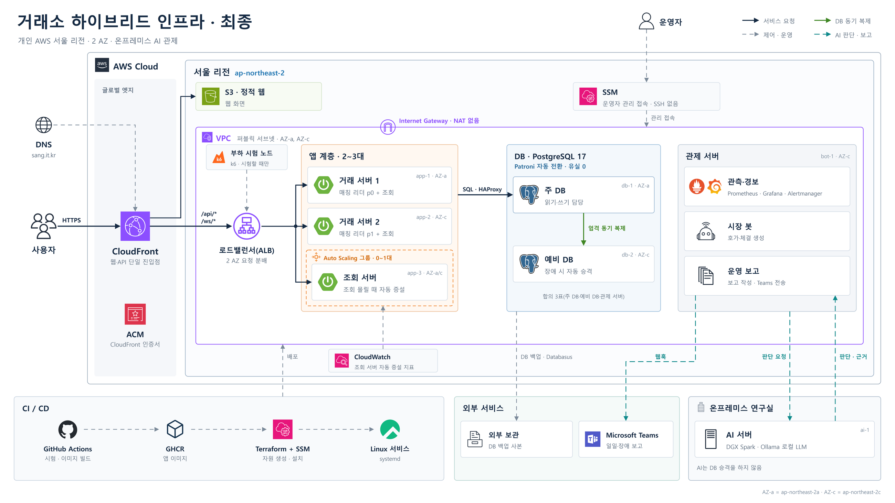

페일스톱
모의 거래소 운영 인프라
시스템 구성
03
전체 화면 (F)
역할별 서버 분리
, AI 판단은 온프레미스 서버에
최종 구성도
거래소 하이브리드 인프라 · 최종 구성도
교수님 보고본 01_전체구성 v7 · 그림을 누르면 확대
닫기 (Esc)

주문은 12개 마켓을 반씩 맡은 두 거래 서버(리더)가 처리하고, 한 대가 멈추면 다른 한 대가 넘겨받음
AWS 서울
데이터센터(AZ) 두 곳
온프레미스 · 직접 둔 서버
사용자 ·
시장 봇(가상 주문)
SQL
엄격 동기 복제
지표 수집
로드밸런서
ALB
앱 계층 · 최소
2
· 최대
3
자동 증설 · 0~1대
거래 서버 1
마켓 6개 리더
거래 서버 2
마켓 6개 리더
조회 서버
조회만 · 몰릴 때
주 DB
PostgreSQL 17
예비 DB
PostgreSQL 17
자동 전환(Patroni)
주·예비 DB와 관제 서버
세 대 중 두 대 동의로 주 DB 결정
관제 서버
관측 · 봇 · 보고
보고
Teams
일일·장애 보고
판단 요청
AI 서버
GPU 서버 · 로컬 LLM
DGX Spark
판단 평가 수치(04-6 AI 관제)는
개발 PC(RTX 4090)에서 잰 값
학교 AWS 보고 요약은 Gemini
서비스 요청
관측
DB 동기 복제
AI 판단 요청